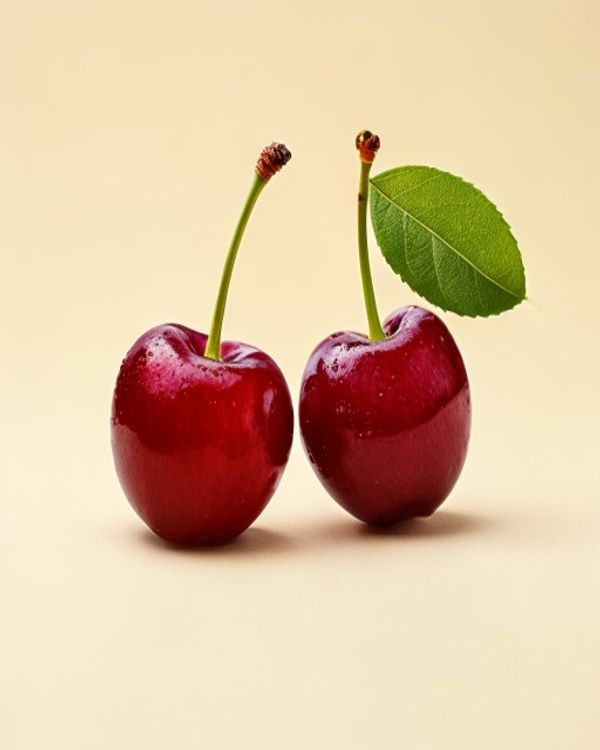
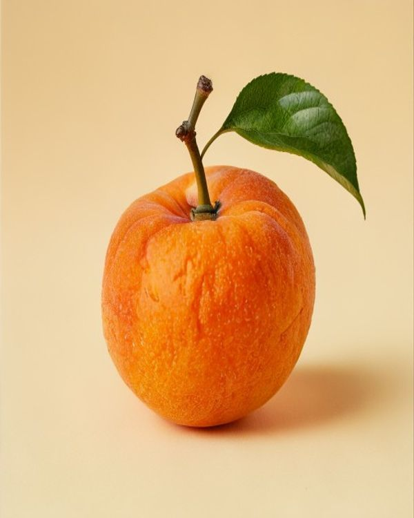
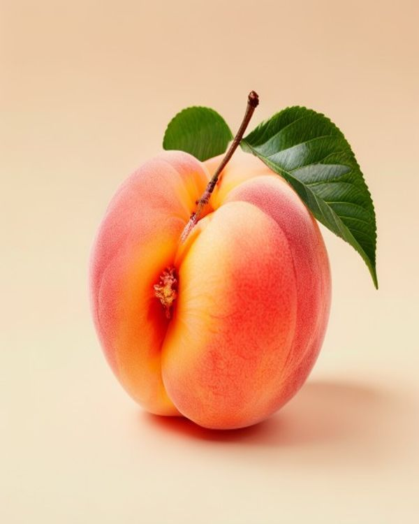
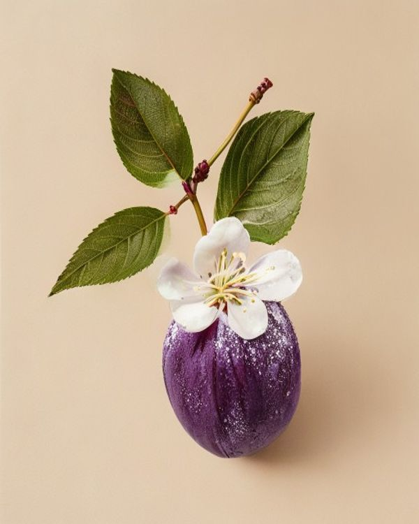
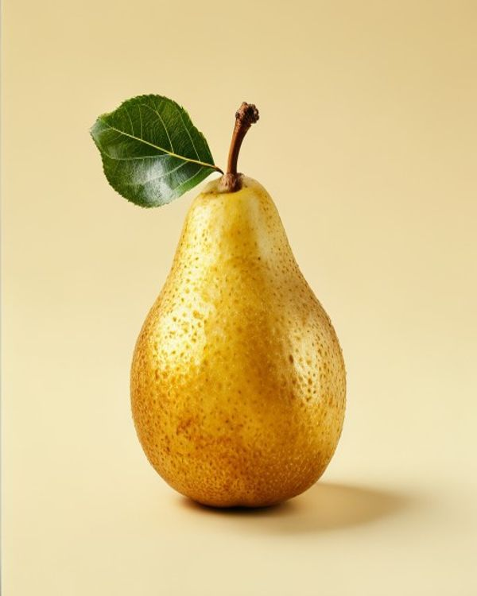
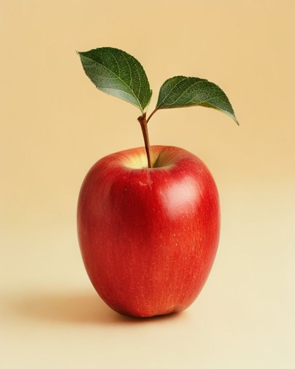
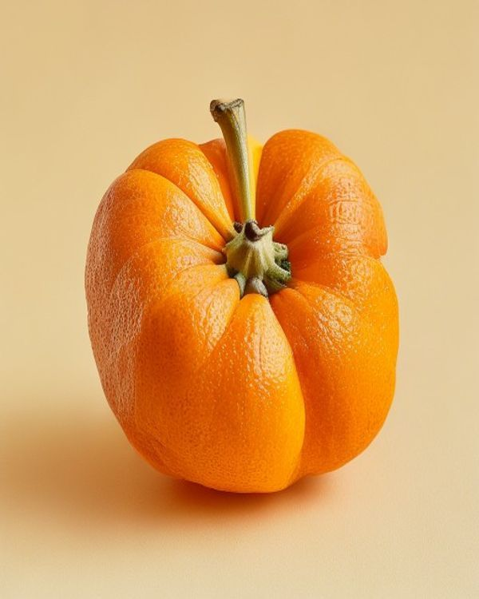
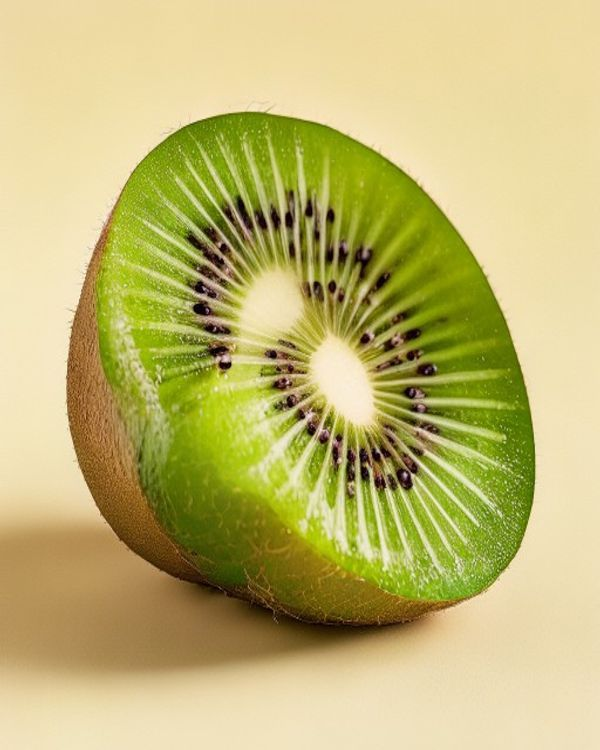
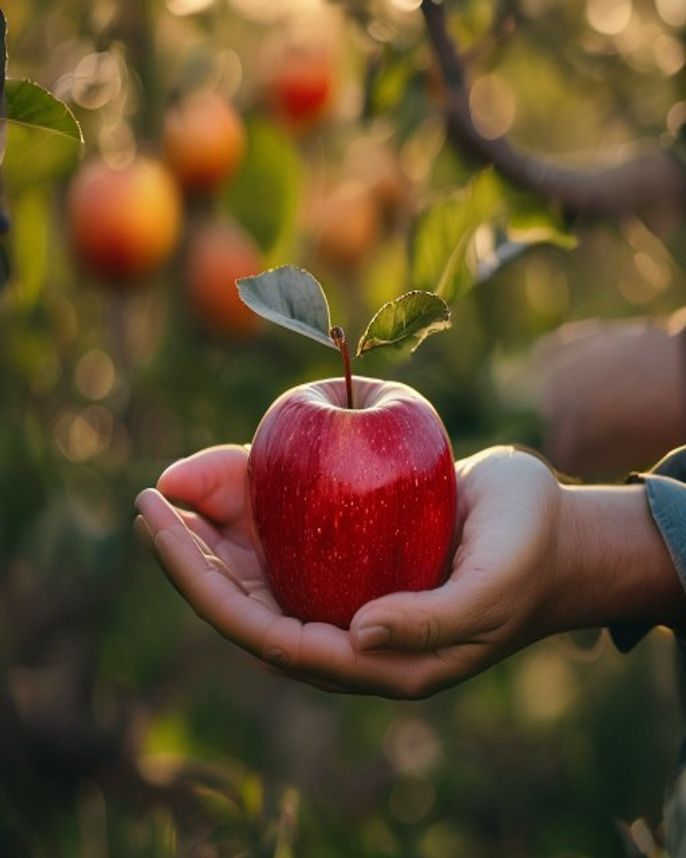

糖度 16° 海拔 1100m 6/18 采收
06 · CHERRY · 夏初
樱桃 / 车厘子
三周采摘窗,极短。霜冻和雨水都会减产,等到果皮绷紧、果柄翠绿再采;清晨四点半上山。
规格 · 28-32mm · 2 斤装
¥ 168
每一轮迭代都被留在这里,点节点看当时改了什么。尚在规划的项标为空心。
新增 §6 来访路线,内嵌 OpenStreetMap iframe(零 API key · 零依赖 · 纯静态)。 地图中心定到北纬 35.130 / 东经 108.650(旬邑县张洪镇), 右侧三张路线卡(自驾 / 采摘拼车 / 寄存)说明实际怎么来。
1989 年起这片坡地一直在我们家人手里。
我们种苹果、梨、桃、杏、李、柿、樱桃、猕猴桃二十余种果品；按节气采收，不抢提前，不打折扣。
| 文件名 | 尺寸 / 比例 | 题材 | 摄影提示(英) |
|---|---|---|---|
hero.jpg | 1920×1080 / 16:9 | 果园全景 | Apple orchard at golden hour, rows of apple trees stretching into distance, soft mist, warm backlight |
story.jpg | 800×1000 / 4:5 | 人 / 农事 | Close-up of elderly farmer's hands holding a ripe red apple, orchard background softly blurred, warm daylight |
apple.jpg | 600×750 / 4:5 | 苹果(主力) | Single ripe red Fuji apple with characteristic yellow sun blush stripe, stem & leaf, on cream background, studio food photography |
pear.jpg | 600×750 / 4:5 | 梨 | Single golden pear with characteristic shape, stem & leaf, on cream background, studio food photography |
peach.jpg | 600×750 / 4:5 | 桃 | Single ripe peach with front cleft, soft pink-yellow skin with natural blush, leaf, studio food photography |
apricot.jpg | 600×750 / 4:5 | 杏 | Single ripe orange apricot with natural red blush, stem & leaf, studio food photography |
plum.jpg | 600×750 / 4:5 | 李 | Single dark purple plum with natural white bloom powder, thin stem & leaf, studio food photography |
cherry.jpg | 600×750 / 4:5 | 樱桃 | Two ripe red cherries with stems and a small green leaf, on cream background, studio food photography |
persimmon.jpg | 600×750 / 4:5 | 柿 | Single ripe orange persimmon with characteristic four-pointed calyx on top, studio food photography |
kiwi.jpg | 600×750 / 4:5 | 猕猴桃 | Halved kiwi showing vibrant green interior with ring of black seeds, brown fuzzy outer skin, studio food photography |
_assets/img/ 文件夹(覆盖同名文件)我们不卖反季果。每一种应季而上，达到风味峰值才下枝；标记的采摘窗跟随每年真实气候微调。 海拔与糖度是结果，不是配置。

糖度 16° 海拔 1100m 6/18 采收
糖度 13° 海拔 900m 6/28 采收
糖度 14° 海拔 600m 7/10 采收
糖度 12° 海拔 750m 7/22 采收
糖度 12° 海拔 700m 9/5 采收
糖度 14° 海拔 850m 10/15 采收
糖度 18° 海拔 500m 10/25 采收
糖度 13° 海拔 950m 11/8 采收
我们家是这里最早一批引种红富士的农户。祖父坚持"靠天吃饭"——不修大棚、 不施化肥、不打除草剂;父亲接手后把灌溉改成滴灌、把疏果标准写进了家庭手册。
到我这代,更多的事没变——仍然是节气到了才采摘,仍然是挑最熟的果下树。 我们增加的,只是把这份诚意送到你手里时,包装和时机的细节。
每年 6 月到 11 月，每周一查园。下表是本周采收主力的果品与产量; 卖完即停，绝不退而求其次发差一档的果。
承诺低于检测阈值,接受第三方自费送检;检出包退并全额退款。
签收时坏果拍照即可,同一批果品补寄,顺丰冷链原路返回。
树上下树即发,自然果粉保留;塑料包装盒内无保鲜剂。
苹果、梨常温阴凉处可放 2 个月,适合家庭办公室替代零食。
顺丰生鲜冷链为主,偏远地区转京东冷链;礼盒配泡沫箱 + 冰袋 + 吸水纸, 摔损率按去年数据控制在 2.3% 内,坏果包换。
C 端走"按季预订 + 顺丰冷链";B 端走"按周配送 + 月度对账"。 填完下方表单,我们在一个工作日内和你联系。
旬邑县张洪镇后河头村北塬 086 号 · 北纬 35°08′ 东经 108°39′。 自驾导航搜 "旬邑塬上采摘园";旺季(6-11 月)每周三、周六有从咸阳/西安出发的采摘团拼车。
西安/咸阳出发走 G70 福银高速,在 旬邑出口下; 出高速后右转沿 X305 县道约 8 公里,见 "旬邑塬上" 路标右转即到。 园门口有停车位 6 个,免费。
旺季每周三、六,早上 7:30 从 咸阳秦都高铁站 集合发车, 中巴直送果园门口;返回 17:00。可加客服微信预约座位。
旺季自驾建议带泡沫箱 + 冰袋;若行李已满,果园有 800L 公共冰柜可寄存, 走时取走。单次寄存免费。
C 端加好友问早 / 拼单 / 排队;B 端加采供专线问贴牌 / 量价 / 账期。 公众号每周三发本周采收实拍。
问早 / 拼单 / 售后 / 排队;
每周三晚更新本周采收实拍。
每周三晚 20:00 推送本周采收实拍;
采摘日历 + 早熟快讯。
月供 200 斤起 / 增值税专票 /
账期可议;采供直通。
如果你没找到答案,加微信 shisui-orchard 我们直接答你。